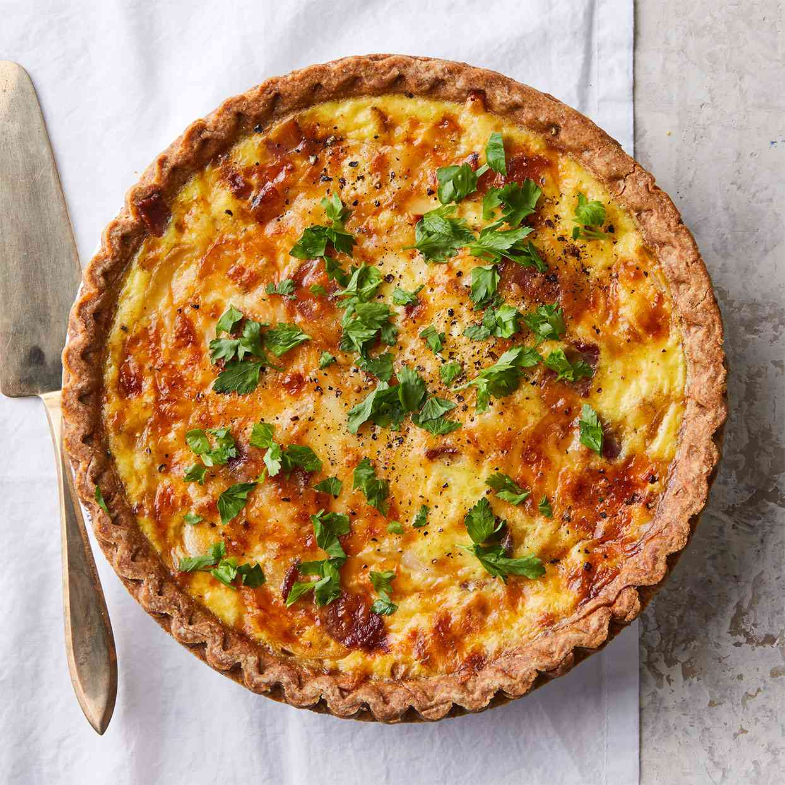

Quiche

This is an easy, delicious quiche that takes no time
to prpare using a frozen deep-dish pie crust, bacon
bits, cream, and two types of cheese!
Ingredients
Pie Crust
Bacon
Onion
Cheese
Eggs
Cream
Recipe
- Place the frozen pie crust on a baking sheet
- Mix the bacon, onion, and cheeses together and pour mixture
into the pie crust
- In a separate bowl mix the eggs with the half-and-half.
- Pour the egg mixture over the cheese-bacon-mixture
- Bake in a preeated oven at 400 degrees F for 15 minutes
- Reduce heat to 350 degrees F for 35 minutes
- Let cool and enjoy!